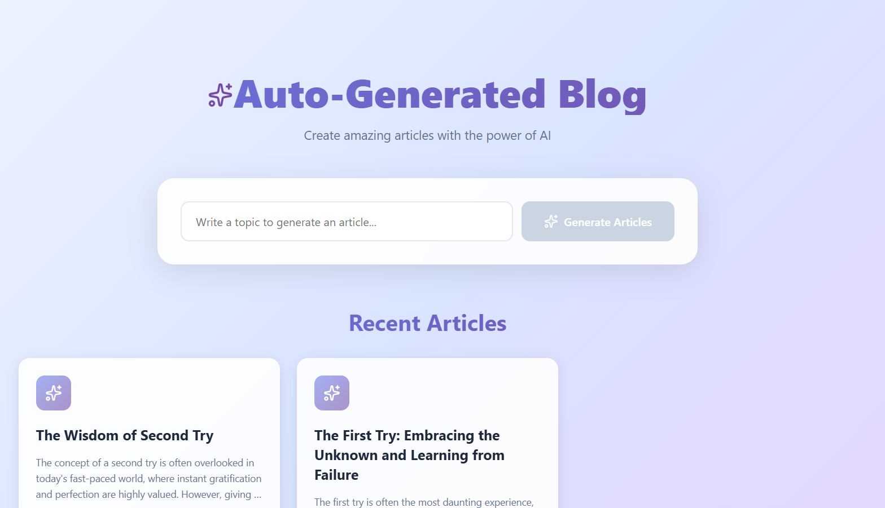

Academic project developed for two complementary courses, aiming to build a distributed library management system.
Backend API: Java, Spring Boot, JWT, JPA, PostgreSQL, Kafka
Frontend:
Android App: Java, Android Studio
React Mobile App: React
Main Features & Technical Highlights:
Backend API built with Spring Boot, leveraging JPA for persistence and Kafka for asynchronous messaging between services.
User authentication and registration with JWT for secure token-based login.
Management of books, genres, and loans using CQRS pattern and database-per-service architecture.
Android application (Java, Android Studio) with responsive UI.
React mobile app for cross-platform access, connecting securely to backend APIs via REST endpoints.
Screenshot of the Android app LoginScreenshot of the Android app Menu
Java Microservices Manager
Personal Project
This project is built to showcase a robust, scalable, and fully modular Java-based microservices architecture.
It leverages Spring Boot together with Spring Cloud Config for centralized configuration management and the
Eureka Service Registry for dynamic and resilient service discovery.
A centralized API Gateway was recently added to streamline request routing, enhance security,
and provide a unified entry point for all external clients.
The system also integrates a Spring Mail module, enabling automated email sending for notifications and application events, improving communication and system interaction.
All database are containerized using Docker.
Architectural patterns such as CQRS and database-per-service ensure modularity, autonomy, and clear data boundaries between services.
Automated testing with JUnit reinforces reliability and long-term maintainability.
Technologies:Java,
Spring Boot,
Spring Cloud Config,
Eureka Service Registry,
Spring Cloud Gateway,
Spring Mail,
CQRS,
Docker,
JUnit
Project focused on building a responsive and interactive web interface, leveraging modern
HTML5, CSS3, and Flexbox/Grid for layout management.
Emphasis was placed on semantic markup, cross-browser compatibility,
and user-friendly interactions.
Features:
Fully responsive layout adapting to multiple screen sizes.
Custom animations and interactive UI components for enhanced user experience.
Semantic HTML structure following best practices for accessibility and maintainability.
Highlights:
Clear and intuitive interface design.
Flexible layout using modern CSS techniques (Flexbox/Grid).
Easily extendable for future integration with backend APIs or dynamic content.
Auto-Generated Blog
Full-Stack Technical Challenge

Screenshot of the React frontend
This project is a full-stack auto-generated blog built as a technical challenge.
The frontend is built with React and communicates with
a Node.js backend that stores articles in
PostgresSQL. Both services are containerized using
Docker and deployed on an AWS EC2 instance.
The backend generates articles automatically using a free AI API.
Highlights: Full-stack architecture, automated article generation with AI, containerized deployment, CI/CD pipeline with AWS services, public demo available at
✨ Auto-Generated Blogs ✨